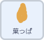
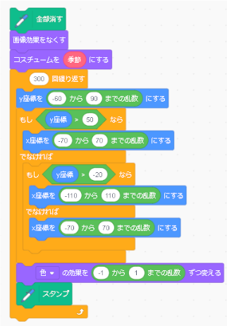
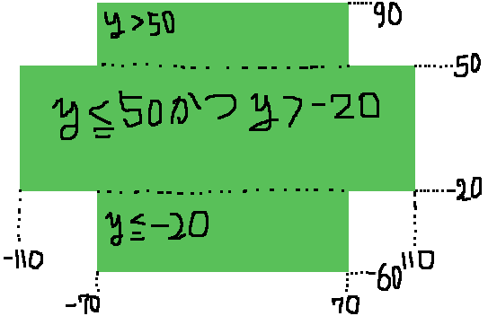
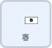
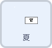
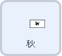
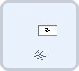
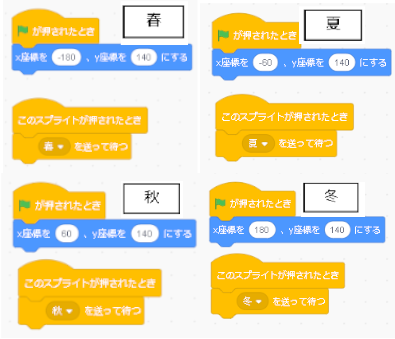
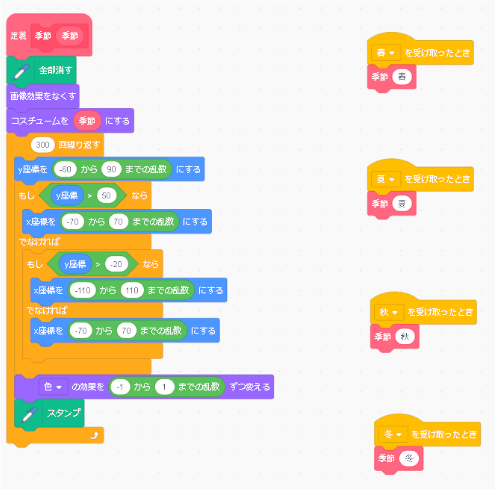

四季の変化
今回は、木の四季の変化をプログラムします！ ボタンを押すと、葉の色が変化します。 ちなみにこの葉っぱは書いているのではなく、一つの葉をある程度範囲を決めて、 その中でランダムに表示させています。
プログラムするスプライト |
|
|  | １.葉っぱの大量生産
このプログラムは、葉っぱを手で書くのではなく、一枚の葉をランダムに大量に表示させることで、木の葉っぱを表現します。 なのでまずは、木の葉っぱを書いているプログラムを見ていきます。 最初にこの300回繰り返しているプログラムから見ます。 この中身で何をしているのかというと、 木の葉っぱっぽく見せるために、葉っぱ一枚一枚を置く範囲（座標）を指定し、 その範囲の中でランダムに決めた座標の位置にスプライトを移動させ、そこにスタンプを押すということをしています。 まずは、y座標を決めます。-60から90の乱数と書かれています。 つまり、葉っぱのy座標は-60から90の範囲に置くようにするということです。 y座標が決まったら、次はx座標を決めます。 この時、x座標も-60から90のように範囲設定をしてしまうと、長方形の葉っぱが出来上がってしまうので、丸いっぽい形にしていきます。 もし、y座標が50大きかったら、つまり、だいたい葉っぱを置く高さの範囲の上三分の一ぐらいの範囲ですが、 xをｰ70から70の乱数にする、つまり、-70から70の範囲で葉っぱを置くということになります。 つぎに、そうでなければ、つまり、50よりも小さい数だった場合、 その数が、-20よりも大きいとき、xを-110から110の乱数にします。 そうでなければ、すべてに当てはまらない場合、つまり、-20以下の場合、 ｘ座標をｰ70から70の乱数にする。 |
|  |
つまりこの範囲でランダムに葉っぱのスプライトを移動させるということです。 移動したら、スタンプを押す前に、スプライトの色を少しだけ変えます。 -1から1、つまり、初めに設定されている色の両隣にある色の三色をランダムで選びます。 単色だけではなく、ほんの少しだけ色を変えることで、より木っぽくします。 位置と色が決まったので、スタンプを押します。スタンプを押すというブロックは、そのスプライトがある場所に、そのスプライトと全く同じ形のスタンプを押すブロックです。 つまり、スプライトをランダムに移動させてスタンプを押すことで、葉っぱをたくさん生成するということです。今回はスタンプによって描画されているので、違うボタンを押したときにすでに書かれているものを消すために、このプログラムの一番初めに、全部消すというブロックを入れています。 また、前に描画したものを消した後、画像効果をなくすというブロックを置いています。 先ほど3色ランダムと書きましたが、もし仮に300回目のスタンプが元の色の-1の色で終わったとき、そのままになってしまうので、元の色に戻す作業が必要になります。 そして、その次に季節ごとのコスチュームに変えるのですが、 変数が入っています。この変数は次のボタンとの連動についてで説明します。 |
プログラムするスプライト    |
|
|  | 2.ボタンとの連動
次に、どうしたら春夏秋冬のボタンと連動できるのかです。 緑の🏴が押されたらまずはそれぞれの座標を指定します。 ずれても再実行すれば大丈夫になります。 そして、このスプライトが押されたとき、春なら春と夏なら夏のようにメッセージを送ります。 このメッセージを葉っぱのスプライトで受け取ります。 |
はっぱのスプライトに戻る |
|
|  |
それぞれ受け取ったら、季節と書かれたブロックに季節の名前を入れています。 このピンクのブロックは、同じような処理（プログラム）を何度も使用するばあい、 なんどもなんども同じ処理を書かないように、一つのブロックとして定義してたものです。 季節と書かれたブロック゚は先ほどの葉っぱを書くプログラムが定義されています。 また、今回のような何か値を入力するようなブロックは、 同じ処理を書くとは言っても、数値などは少しずつ違うんだ、という時に、 定義されたブロックに入力することで、その数値を変えることができます。 同じ処理ではあるけど、数値などが違う、というところに変数を入れ、 定義されたブロックに入力された文字は、その変数に入れられるという仕組みです。 今回は、ブロックに春・夏・秋・冬のように入れられています。 次に、メインのプログラムに戻ります。 先ほどの変数が入っているのはコスチュームの名前のところです。 コスチュームを見ていただくとそれぞれの葉っぱに春・夏・秋と名前付いていますよね。 つまり、葉っぱのスプライトでは、 ボタンが押されたときに送られたメッセージから、春夏秋冬のどれかを判断し、 その季節を変数に入れると、その変数に入れた季節の名前が付いたコスチュームを呼び出されるわけです。 |